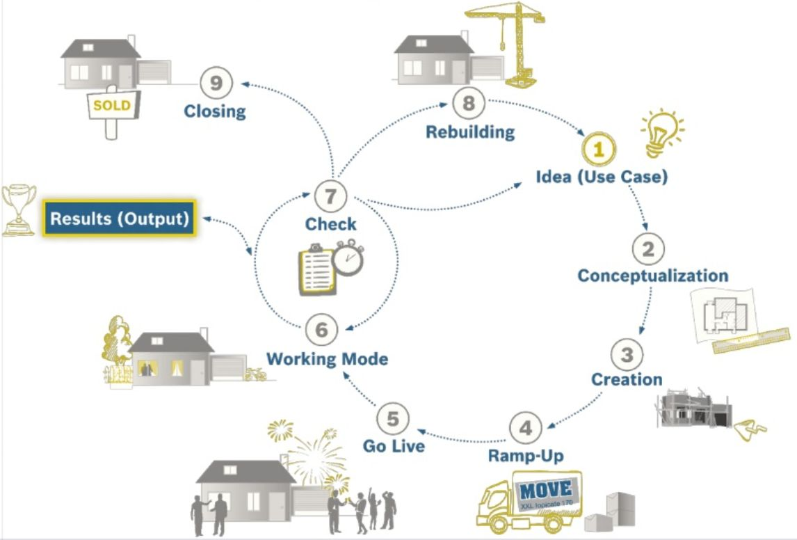

Grundlagen
Viele Unternehmen sind heute als einfache oder mehrfache Hierarchie organisiert. Bekannte Modelle sind hierarchische Stab-Linien-Organisationen, überlagerte Projektorganisationen und Matrixorganisationen.
Da Wissen nicht hierarchisch sondern netzartig strukturiert ist, ergibt sich bei den genannten Organisationsformen das gleiche Problem, wie beim Zeichnen einer Landkarte: es entstehen Verfälschungen! Hierbei ist die Suche nach der “richtigen Hierarchie” nicht zielführend. Egal nach welcher Dimension strukturiert wird, es werden immer benötigte Informations- und- Wissensflüsse durchbrochen. Deswegen sagen führende Organisation- und Change-Management-Experten z.B.:
Hierarchies won‘t be replaced but rather extended by social technology enabled Communities (Dual Operating System, Prof. John P. Kotter)
oder
Wir müssen Entscheidungshierarchien beibehalten, aber Informationshierarchien durch Informationsnetzwerke ersetzen (Prof. Michael Koch)

Das bedeutet in der Praxis, dass Mitarbeiter, die sich mit den gleichen Themen beschäftigen, in unterschiedlichen Abteilungen, Prozessen oder Standorten ansässig sind und der Wissensfluss dadurch behindert wird. Die Idee der “Community” kann hier Abhilfe schaffen. Indem Mitarbeiter mit gleichen Zielen und Themen regelmäßig interagieren können sie Wissen teilen und generieren, unabhängig von organisatorischer und geographischer Verortung. Die Interaktion in Communities kann hierbei in physischen Treffen oder virtuell geschehen.
Durch die Einführung sozialer Medien in Unternehmen in den letzten Jahren steht ein mächtiges Werkzeug für die Unterstützung von Community-Aktivitäten zur Verfügung. Moderne Enterprise Social Networks (ESN) bieten u.a. die Möglichkeit Online-Communities zu erstellen und dadurch Kommunikation und Vernetzung zu übergreifenden Themen zu flexibilisieren und zu beschleunigen.
Definitionen
- Community: Communities sind Gruppen von Menschen, die ein gemeinsames Ziel haben und regelmäßig bzw. bei Bedarf interagieren, um ihr Ziel zu erreichen. “Eine Online Community ist zudem eine virtuelle, themenbasierte Arbeitsumgebung, die Teams mit gleichen Interessen und Aufgaben eine Heimat bieten kann. Hier kann mit verschiedenen Funktionen effizienter an einem Thema zusammengearbeitet werden, als klassisch per E-Mail. Alle Informationen sind zentral an einem Ort verfügbar und können überall von jedem Device bearbeitet werden.” (Katharina Perschke, Bosch)
- Community Management: Community Management ist die Bezeichnung für alle Methoden und Tätigkeiten rund um Konzeption, Aufbau, Leitung, Betrieb, Betreuung und Optimierung von virtuellen Gemeinschaften sowie deren Entsprechung außerhalb des virtuellen Raumes. Unterschieden wird dabei zwischen operativen, den direkten Kontakt mit den Mitgliedern betreffenden, und strategischen, den übergeordneten Rahmen betreffenden, Aufgaben und Fragestellungen (Quelle: BVCM 05.2010). Community Management ist die Bezeichnung für alle Methoden und Tätigkeiten rund um Planung, Start, Aktivierung, Führung und Transformation von Communities.
- Community of Practice (CoP): Communities of Practice (CoP) sind Gruppen von Personen, die Interesse oder Leidenschaft für eine Tätigkeit (Praxis) teilen und durch regelmäßige Interaktion lernen, diese Tätigkeit besser auszuführen (nach Wenger).
Community Rollen
Communities können organisch und ohne festgelegte Rollen funktionieren. Viele Communities basieren auf Graswurzel-Bewegungen und der Partizipation von Freiwilligen. In der Praxis hat sich aber gezeigt, dass “Kümmerer” in Form bestimmter Rollen die Entwicklung von Communities positiv beeinflussen können. Wichtig ist, dass über die Definition von Rollen keine “Bürokratisierung” oder “Überformalisierung” der Community entsteht und freie Interaktion möglich ist.

- Community Manager: ist für die Koordination von Planung, Start, Aktivierung, Führung und Transformation der Community zuständig. Die Rolle des Community Managers kann bei einer Person liegen oder auf mehrere Personen verteilt sein (Empfehlung: mindestens zwei, bei verteilten Communities ggf. zusätzlich lokale Community Manager). Community Manager sollten sich nicht als “Chef” der Community verstehen, sondern eher als “Gastgeber”. In der Praxis sind verschiedene Namen für die Community Manager Rolle gängig (z.B. Community Coordinator, Community Leader, Community Facilitator, Fachforum-Sprecher).
- Community Management Team (optional): Je nach Größe und Bedeutung einer Community kann es sinnvoll sein, die Aufgaben eines Community Managers auf mehreren Schultern zu verteilen. Dies ist besonders sinnvoll bei Communities rund um Fachthemen, bei denen der Community Manager nicht der Fach-Experte ist. Hier können sog. Subject Matter Experts (Deutsche Bank) - also Fach-Experten, mit ins Community Management Team aufgenommen werden. Darüber hinaus eignet sich sich die Erweiterung des Community Management Teams bei globalen Communities um lokale Vertreter, um lokale Bedürfnisse und Besonderheiten berücksichtigen zu können (“Location Leader” - Deutsche Bank)
- Community Mitglieder: sind Mitarbeiter, die an den Interaktionen der Community teilnehmen. Dadurch erhalten sie selber Nutzen und/oder stiften Nutzen für andere. Die Mitglieder einer Community können je nach Aktivitätsgrad kategorisiert werden (z.B. Kernmitglieder, aktive Mitglieder, periphere Mitglieder/Lurker). Community Manager sollten nicht erwarten, dass 100% der Mitglieder einer Community aktive Mitglieder sind (s.a. 90:9:1-Regel bzw. 1% Regel).
- Community Sponsor: einflussreiche Person in der Organisation, die hinter dem Thema und den Zielen der Community steht. Management Sponsoren sind für die Legitimation der Community und die Verfügbarkeit von Ressourcen wichtig.
- Führungskräfte der Community Mitglieder: da die Mitgliedschaft in einer Community i.d.R. keine offizielle Rolle und auch nicht in der Zielvereinbarung enthalten ist, können die Führungskräfte der Community Mitglieder als deren “Sponsoren” betrachtet werden.
Anforderungen an Community Manager
So vielfältig die Zwecke und Ziele von Communities sein können, so können auch die Anforderungen stark variieren. Nichtsdestotrotz zeigt sich bei den meisten Communities, dass es ohne ein Engagement eines Community Managers kaum möglich ist, eine lebendige Community zu etablieren und zu führen. Hierbei sei noch besonders hervorgehoben, dass ein Community Manager nicht nur beim Start sondern insbesondere danach notwendig ist. Zum Verständnis ist hier vielleicht auch eine kleine Analogie sinnvoll.
Stellen Sie sich vor Sie werden zu einer Gartenparty eingeladen. Soll ich überhaupt dort hingehen? Soll ich etwas mitbringen? Wer ist noch eingeladen? Kenne ich die Leute? Gibt es wohl Themen über die ich mich mit den anderen unterhalten kann? Soll ich mich bei der Party als “Grillmeister” einbringen? Kommen ihnen diese Fragen bekannt vor? Einen Teil der Fragen werden Sie als Community Manager direkt bei der Einladung oder bei einem kurzen Gespräch vorab klären können. Viele Fragen werden die Besucher aber auch während der Party haben. Daher sind Sie als Gastgeber insbesondere während der Party gefragt z.B. die Gäste untereinander in Kontakt zu bringen und ihnen möglichen zu bieten sich mit konkreten Dingen einzubringen (Musik machen, grillen, etc.).
Als Community Manager bzw. Gastgeber müssen Sie somit gewisse Anforderungen mitbringen um ihrer Rolle gerecht zu werden. Eine gute Quelle für generelle Erfolgsfaktoren für erfolgreiches Community Management im beruflichen Kontext hat das Unternehmen [buw] digital zuletzt in ihrem Blog-Beitrag “Corporate Community Management - 10 Erfolgsfaktoren für Community Management im Enterprise 2.0” veröffentlich. Darin werden folgende Punkte hervorgehoben (Details zu den einzelnen Punkten, finden Sie im verlinkten Blog-Beitrag): Empathie, Serviceorientierte Denkart Reaktionsgeschwindigkeit, Ängste nehmen, Evangelisieren, begeistern, vorleben, entertainen, Veranschaulichen und das Niveau treffen, Adaption von Prozessen, Kontinuität, Stringenz, Konsequenz und Kohärenz, Charmantes Nerven. Weitere Anforderungen in etwa sind: Zuverlässigkeit, Initiativ, im Thema Zuhause, Teamplayer, freundlich. Corporate Community Management Erfolgsfaktoren Infografik (Quelle: buw blog)
Je nach Zweck und Ziel der Community können diese Anforderungen bzw. Erfolgsfaktoren aber auch stark variieren. Dies zeigen auch die Anforderungsprofile eines Community Managers des Bundesverbands für Community Management e.V. (BVCM). Aufgrund der vielzahl von möglich notwendigen Anforderungen an einen Community Managers kann es sinnvoll sein Einzelanforderungen in Rollen zu bündeln. Genau dies hat die Robert Bosch GmbH gemacht und folgende Rollen eines Corporate (internen) Community Manager definiert. Je nach Community Ziel und Zweck sind dabei auch die Schwerpunkte der Anforderungen an einen Community Manager unterschiedlich: Führungskraft, Stratege, Manager, Facilitator, Marketer, Gärtner, Berater, Unterhalter, Architekt, Content Manager, Wissens Manager, Motivator, Vermittler, Prozess Designer, Marken Botschafter, Projekt Manager, Netzwerker, Wächter, Redakteur, Analyst, Teilnehmer, Event Manager, Moderator, Konzepter. Bei der deutschen Telekom unterscheidet man in die Rollen Inhaltsersteller, Moderator, “Lebenszirkel-Begleiter”, Administrator, Evaluator und Themenspezifischer Fachexperte.
Verschiedene Rollen eines Community Managers bei der Robert Bosch GmbH (Copyright Robert Bosch GmbH 2016. Alle Rechte vorbehalten, auch bzgl. jeder Verfügung, Verwertung, Reproduktion, Bearbeitung, Weitergabe sowie für den Fall von Schutzrechtsanmeldungen, Quelle ->Aufgabe: korrekte Quelle finden).
Übertragen auf unser Beispiel der Gartenparty würden Sie als Gastgeber hauptsächlich in der Rollen des Unterhalters, Vermittlers, Netzwerkers, Teilnehmers und Moderators agieren.
Community Lifecycle
Planung, Start, Aktivierung, Führung und Transformation von Communities lässt sich nicht als linearer Prozess mit klar definiertem Anfang und Ende darstellen. Ähnlich der Entwicklung im Projektmanagement in Form des Übergangs von linearen Modellen zu iterativen Modellen, lassen sich auch beim Community Management Phasen benennen, die in Iterationen durchlaufen werden. Diese Phasen werden in den folgenden Kapitel drei bis fünf im Detail beschrieben:
Aufgabe: Community Lifecycle visualisieren (Simon)
Der Community Lifecycle der Robert Bosch GmbH (Copyright Robert Bosch GmbH 2016. Alle Rechte vorbehalten, auch bzgl. jeder Verfügung, Verwertung, Reproduktion, Bearbeitung, Weitergabe sowie für den Fall von Schutzrechtsanmeldungen, Quelle)

Community Toolkit
- Ask Me Anything (AMA)
- Blogparade
- Community Call
- Meetup
- Podcast
- Videokonferenz
- Wissenslandkarte
- Working Out Loud (WOL)
Community Fallbeispiele
Aufgabe: Einleitungstext zur Auswahl der Communities mit Nennung von Typen ohne Anspruch auf Vollständigkeit. Klären, welche der Communities im Playbook gelistet werden dürfen, für diese Name und Kurzbeschreibung (2-3 Zeilen), wenn vorhanden Visualisierung (Foto, Screenshot) und weiterführende Informationen (wenn vorhanden). Communities, die wir ins Playbook aufnehmen, fett markieren und Ansprechpartner dazu schreiben.
Anwendungsfälle in Communities (in Einleitungstext integrieren)
Aufgabe: hier brauchen wir einen generellen Standard für Epics/Usecases (aus Projekt mit Telekom? Aperto?).
- Neue Ideen finden
- Informationen kommunizieren bzw. streuen
- Unterstützung bei Problemen und Fragen bekommen
- Meetings und Treffen organisieren
- Experten finden
- Optionen und Ideen gemeinsam bewerten
- Informationen sammeln und kombinieren (Innovation)
- Im Projekt kommunizieren
- Aufgaben transparent organisieren
- Inhalte filtern
- Veränderungsprojekte anstoßen
- Onboarding neuer Mitarbeiter unterstützen
- Vernetzung fördern
GUIDE Network (Continental)
Austauschplattform des globalen GUIDE Netzwerks mit FAQ, mehrsprachige Trainings, Engagement und Coordination "all in one".
Podcast Community (sendegate.de)
- Name: …
- Plattform: Discourse
Geschichte: … wie war die Ausgangssituation, wie wurde die Community initialisiert, welche Barrieren gab es, welche Erfolge gibt es (max. viertel Seite Text) …
Working Out Loud Community (Bosch)
-
Name: Working Out Loud @ Bosch
-
Geschichte: WOL-Community_1.jpg
Die Working Out Loud (WOL) @ Bosch Community wurde im Juli 2015 auf unserem internen ESN “Bosch Connect” (basiert auf IBM Connections) gegründet und hat bis heute bereits > 450 Mitglieder. Sie ist öffentlich und somit für jeden Bosch Mitarbeiter frei zugänglich. Hier finden sich alle Informationen rund um das Working Out Loud und dazugehörige Circle Konzept von John Stepper (s.a workingoutloud.com). Auch die Circles (Lerngruppen von 4-5 Personen) finden sich hier selbstorganisiert zusammen und organisieren sich in Sub-Communities. Diese sind allerdings geschlossen, um die Privatshäre der Circles zu schützen. Die wichtigsten Inhalte werden in zwei Sprachen angeboten, in deutscher sowie englischer Sprache, wobei in den Circle Sub-Communities selbstverständlich auch andere Sprachen zulässig sind. Ziel der Community ist es, die Methode “Working Out Loud” (Working Out Loud = transparente, offene, netzwerk- und damit resonanzbasierte Arbeitsweise) bei Bosch zu implementieren und alle Interessenten unter einem Dach (der Community) zu vereinen. Ein Team aus sechs Corporate Community Managern, natürlich WOL-Enthusiasten der ersten Stunde, unterstützt selbstorganisiert und auf freiwilliger Basis die dort laufenden Aktivitäten. Hauptsächlich werden in der Community die folgenden Funktionen genutzt:
- Blog: zur Information über Neuigkeiten aus der WOL-Welt (intern und extern), Rückmeldungen aus Circlen etc.
- Forum: Beantwortung von Fragen, Organisation der Circles (an einem Circle teilnehmen bzw. einen Circle moderieren)
- Wiki: Informationen zur WOL Methode und des Circle Konzepts sowie alle Inhalte, die im Circle benötigt werden (Circle Guides, Vorlagen etc.), Übersicht über alle Bosch Circles
- Lesezeichen: Links zu den wichtigsten externen WOL Adressen
- Neuigkeiten: kurze Ankündigungen über WOL Aktivitäten
Neue Mitglieder werden täglich ganz persönlich begrüßt. Sie erhalten neben einem persönlichen Willkommensgruß einen Link auf eine “Willkommens-Seite”, die Ihnen einen Überblick über die Community gibt und bei den ersten Schritten unterstützt. Dies hilft, sie in das bestehende Netzwerk zu integrieren und aus der technischen Komponente “Community” auch eine starke soziale Gemeinschaft zu entwickeln, die das Thema “Working Out Loud” bei Bosch vorantreibt. Dies kann nur durch aktives Vorleben und persönliche Erfolgsgeschichten der Nutzer gelingen, da ist sich das Community Manager Team sicher. Und die Methode von “Working Out Loud”, dem netzwerkbasierten Arbeiten, wird im digitalen Zeitalter zu einer wichtigen Fähigkeit für das Unternehmen.
Weiterführende Informationen:
- Webseite workingoutloud.com
- Working Out Loud Week
- Blog Working Out Loud: eine wichtige Methode für interne Community Manager
- Tutorial Working Out Loud erlernen
Weitere Fallbeispiele
- Airbus - Weber, Frithjof et al. (2007): Wissensmanagement? Im Flug erobert. Wissensmanagement Heft 8 / 2007. URL: http://home.arcor.de/frithjof.weber/download/Weber_etal_2007_Wissensmanagement__WM%20im%20Flug_erobert.pdf, abgerufen 02.03.2015
- Alcoa in APQC (2010): The Positioning Communities of Practice for Success - An APQC Collaborative Benchmarking Report.
- BASF - Chin, Dr. Chew; Wolf, Marlene (2013): connect.BASF - Creating chemistry with an Online Business Network. URL: http://de.slideshare.net/basf/connect-basf-onlinebusinessnetwork
- Bosch - Perschke, K. / Göhring, M. (2015): Berufsbild Interner Community Manager.URL: http://de.slideshare.net/martinagoehring/knowtech2014-goehring-perschke abgerufen am 17.02.2016
- Bosch - Perschke, K./Koch, B. (2015): The importance of community-based collaboration for Robert Bosch GmbH. URL: http://socialconnections.info/sessions/the-importance-of-community-based-collaboration-for-robert-bosch-gmbh/ abgerufen am 17.02.2016
- Cisco (2012): Community Management Playbook 2013. URL: http://de.slideshare.net/Cisco/cisco-communities-playbook-2013, abgerufen am 27.02.2015
- ConocoPhilips (2010) - 2010 MAKE Finalist - Case Study. URL: http://www.aiim.org/documents/chapters/southwest/AIIM_SWChapter_17Feb2011_DanRanta_2010%20COP%20case%20study.pdf, abgerufen am 10.04.2015
- ConocoPhilips - Ranta, Dan (2013): Power of Connections at ConocoPhillips. URL: http://de.slideshare.net/SIKM/dan-ranta-power-of-connections-at-conocophillips, abgerufen am 29.05.2015
- Daimler Chrysler - Karboul, Amel (2002): Die Tech Clubs von Daimler Chrysler. URL: http://www.symposion.de/wissen_kapitel08940101_WERK0970.html, abgerufen am 02.03.2015
- Deutsche Telekom - Schildknecht, Martina; Holst, Marcus (2011): Communities of Practice funktioniert! - Beispiel der Telekom Knowledge Management Community. Knowtech 2011.
- Ernst & Young in APQC (2010): The Positioning Communities of Practice for Success - An APQC Collaborative Benchmarking Report.
- Festo - Martin Kimmich (2011) - Überblick Festo Wissensmanagement. GFWM Regionaltreffen. URL: http://archiv.gfwm.de/files/groups/files/20110713%20GfWM@Festo%20external%20version_0.pdf, abgerufen am 27.02.2015
- Semco - Sempler, Ricardo (2000): How We Went Digital Without a Strategy. Harvard Business Review. URL: http://www.pdfdrive.net/how-we-went-digital-without-a-strategy-resourceful-humans-e5048924.html, abgerufen am 03.06.2015
- Semco - Fenton World Dynamics (2002): Semco: A vision for the future?. URL: http://lambtonhat.weebly.com/uploads/4/4/1/3/4413567/semco_a_vision_of_the_future_.pdf, abgerufen am 03.06.2015
- Siemens - Becker, Lothar, Müller, Micha (2011): Experten-Communities als Steuerungsinstrument für eine globale Enterprise 2.0 Initiative. Knowtech 2011. URL: http://www.knowtech-community.de/files/documents/F1-02_Becker_Mueller_Siemens.pdf, abgerufen am 20.05.2015
- Siemens - Stocker, Alexander; Müller, Johannes (2013): Exploring Factual and Perceived Use and Benefits of a Web 2.0-based Knowledge Management Application. The Case References+. I-Know 2013. URL: http://de.slideshare.net/stockera/exploring-factual-and-perceived, abgerufen am 20.05.2015
- Siemens - Heiss, Michael Prof. Dr. (2010): Social Media and ROI: Why use-cases are more compelling than Excel sheets; RIP 4 ROI, URL: http://de.slideshare.net/heisss/rip4-roi-siemens-heiss, abgerufen am 19.06.2015
- Schaeffler - Seren, Paul (2014): Networks of Competence bei Schaeffler. Cogneon Management 2.0 Lerntag "Internes Community Management. URL: https://www.youtube.com/watch?v=ir0MGxcKk3E, abgerufen am 27.02.2015
- Schaeffler - Willi, Kurt-Jürgen (2006) - Wissensmanagement in der Schaeffler Gruppe, GFWM Stammtisch Mittelfranken am 09.02.2006, URL: http://archiv.gfwm.de/files/GfWM-Stammtisch%20Mittelfranken%20-%202006-02-09%20-%20WM%20in%20der%20Schaeffler%20Gruppe.pdf, abgerufen am 23.04.2015
- ThyssenKrupp - Schnauffer, Hans-Georg (2010): Wissensmanagement bei ThyssenKrupp - Mit Communities of Experts WIssenspotentiale erschließen. Knowtech 2010. URL: http://de.slideshare.net/simon.dueckert/vortrag-thyssenkrupp-cogneon-knowtech-2010, abgerufen am 27.02.2015
- Schlumberger in APQC (2010): The Positioning Communities of Practice for Success - An APQC Collaborative Benchmarking Report.
- Swisscom (2013): Der Customer Centricity Score. Ein KPI für Kundenzentrierung. URL: http://de.slideshare.net/designfokus/customer-centricity-score, abgerufen am 28.05.2015
- UBS - Stoller-Schai, Dr. Daniel (2011): Community Building bei der UBS AG - "Communities ohne Management funktionieren nicht". Knowtech 2011. URL: http://de.slideshare.net/dstoller/community-building-bei-der-ubs-ag-communities-ohne-management-funktionieren-nicht-9501216?qid=e06ba35d-aaca-499c-b02d-49e3c3ae0c8d&v=default&b=&from_search=6, abgerufen am 08.06.2015.
Weiterführende Informationen
Bücher:
- Bacon, Jono (2009): The Art of Community - Building the New Age of Participation. O*Reilly Media
- Dueck, Gunter (2013): Das Neue und seine Feinde. Campus Verlag.
- Gröscho, Steffi et al. (2015): Willkommen in der neuen Arbeitswelt - So erwecken Sie ein Social Intranet zum Leben. School of Communication and Management
- Hansen, Morton (2009): Collaboration: How Leaders Avoid the Traps, Create Unity, and Reap Big Results. Harvard Business School Publishing
- Hofstede, Geert (2001): Culture's Consequences: Comparing Values, Behaviors, Institutions and Organizations Across Nations, 2. Auflage, Thousand Oaks CA: Sage Publications
- Hubert, Cindy; O*Dell, Carla (2011): The New Edge in Knowledge - How Knowledge Management is Changing the Way we do Business. John Wiley & Sons
- Kotter, John (1996): Leading Change. Harvard Business Press.
- Lesser, Eric L. et al. (2000), Knowledge and Communities. Butterworth-Heinemann
- Millington, Richard (2012): Buzzing Communities - How to Build Bigger, Better, and More Active Online Communities
- Romhardt, Kai (2002): Wissensgemeinschaften - Orte lebendigen Wissensmanagements. Versus Verlag
- Lembke, Gerald (2005): Wissenskooperation in Wissensgemeinschaften, LearnAct! Verlagsgesellschaft
- Orr, Julian (1996): Talking about Machines - An Ethnography of a Modern Job. Cornell University Press
- Pein, Vivian (2014): Der Social Media Manager: Das Handbuch für Ausbildung und Beruf. Galileo Press
- Pink Daniel (2011): Drive: The Surprising Truth About What Motivates Us. Riverhead Books
- Senge, Peter (1999): The Dance of Change - The Challenges of sustaining momentum in Learning Organizations. Nicholas Brealey Publishing
- Schein, Edgar (2004): Organizational Culture and Leadership.
- Schleuter, Willibert (2009): Die sieben Irrtümer des Change Managements und wie Sie sie vermeiden. Campus Verlag.
- Stepper, John (2015): Working Out Loud. For a better career and life.
- Wenger, Etienne (1998): Communities of Practice - Learning, Meaning and Identity. Cambridge University Press
- Wenger, Etienne:; Lave, J. (1991): Situated Learning: Legitimate Peripheral Participation. Cambridge University Press
- Wenger. E.; McDermott, Richard; Snyder, William M. (2002): Cultivating communities of practice. Harvard Business School Press
Paper/Studien:
- APQC (2010): The Positioning Communities of Practice for Success - An APQC Collaborative Benchmarking Report.
- BVCM - Ellermann, B. (2014): Corporate Community Management – BVCM und BOSCH stellen Entwurf des neuen Berufsbilds vor.
- BVCM - Langwasser, D. (2010): Veröffentlichung der offiziellen Definition Community Management.
- BVCM - Gust, B. (2012): BVCM definiert Social Media Berufsbilder.
- Community Roundtable (2014): The State of Community Management 2014.
- Community Roundtable (2015): Defining Community Management Roles.
- Community Roundtable (2014): Community Manager Salary Survey 2014.
- Community Roundtable (2015): Community Manager Handbook. 20 Lessons from Community superheroes.
- Community Roundtable (2015): The State of Community Management 2015.
- Community Roundtable (2015): How to Measure, Benchmark and Calculate Community ROI.
- Cialdini, Robert (2013): The Uses and Abuses of Influence. Harvard Business Review. July-August 2013.
- Herzog et al. (2014): Barrieren der Erfolgsmessung von Enterprise Social Software. Vorgestellt auf der Multikonferenz Wirtschaftsinformatik 2014.
- Hofstede, Geert (2006): Cultural influences on knowledge sharing through online communities of practice, Journal of knowledge management 2006.
- Kavanaugh et al. (2005) - Weak Ties in Networked Communities. The Information Society: An International Journal.
- Kotter, John (2012) - Accelerate!. Harvard Business Review November 2012.
- Kotter, John; Schlesinger, Leonard (2008) - Choosing strategies for Change. Harvard Business Review July-August 2008.
- Kotter, John (2008): Leading Change: Why Transformation Efforts Fail. harvard Business Review January 2007 - Best of HBR.
- Lindemann, Udo; Schön, Stefan (2001): Gestaltung und Unterstützung von CoPs. Reihe Produktentwicklung der TU München. Herbert Utz Verlag.
- Lok, Corie (2012): Career development: What*s your type? Nature 488, 545-547.
- McDermott, Richard (2002): Measuring the Impact of Communities. Knowledge Management Review Vol.5 Issue 2.
- McDermott, Richard; Archibald, Douglas (2010): Harnessing Your Staff’s Informal Networks. Harvard Business Review March 2010.
- McKinsey (2013): McKinsey global survey results evolution of the networked enterprise.
- Niemeier, Joachim (2014): Leading the Transformation and Change Process. Enterprise 2.0 Summit 2014.
- North, Klaus; Franz, Michael; Lembke, Gerald (2004): Wissenserzeugung und -Austausch in Wissensgemeinschaften Communities of Practice, QUEM-report, Heft 85
- Pleil, Thomas (2013): Positionspapier Kommunikation 2.0.
- PwC (2014): A perspective on Organizational Culture.
- Richter et al. (2013): Success Measurement of Enterprise Social Networks. In: Proceedings 11th International Conference on Wirtschaftsinformatik, Leipzig.
- Richter et al. (2014): Erfolgsmessung von Enterprise Social Software: Wer? Was? Wie?
- Rossi, Karsten (2013): Positionspapier Kommunikation 2.0.
- Schleuter, Dr. Willibert (2013): Change Management als Revolution von unten.
- Wang, Sheng; Noe, Raymond A. (2009): Knowledge sharing: A review and directions for future research. Human Resource Management Review.
- Wenger, Etienne; Snyder William M. (2000) - Communities of Practice: The Organizational Frontier. Harvard Business Review. January Issue.